1 | ᜁᜐ

Cognitive Synthesis
Life through Sensation and Perception
-
Through denotative and connotative practices, these graphics go through the process of visualizing sensation and perception.
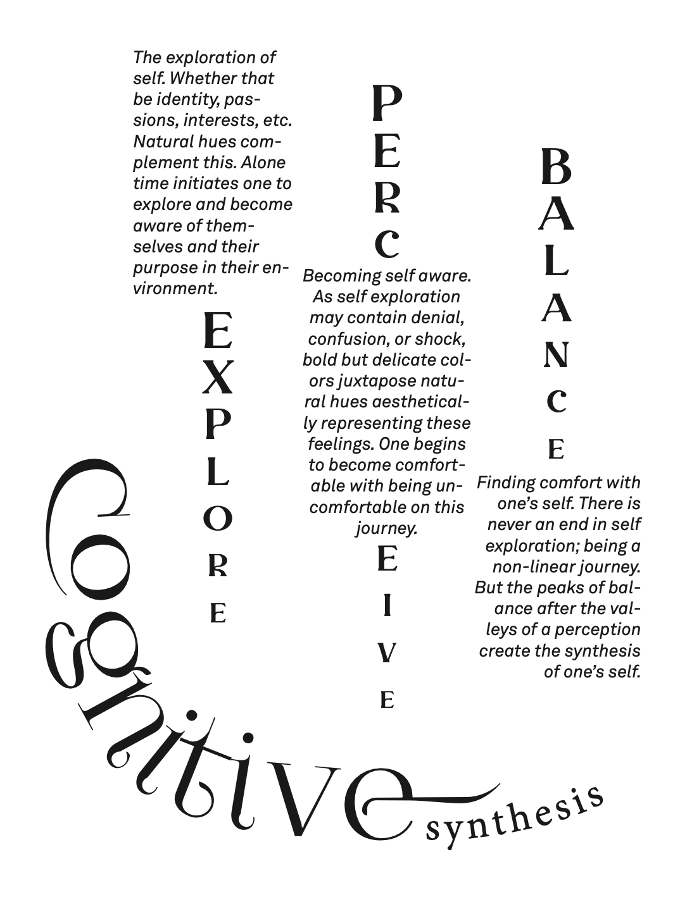 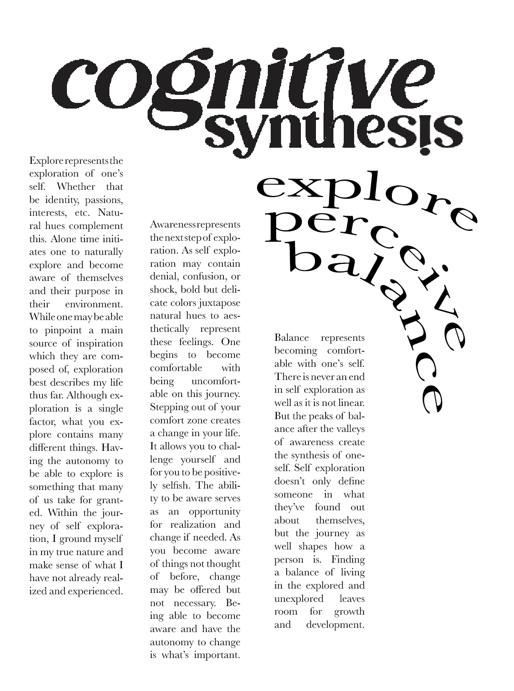Denotative purposes filled these posters with purposeful meanings and thoughts.
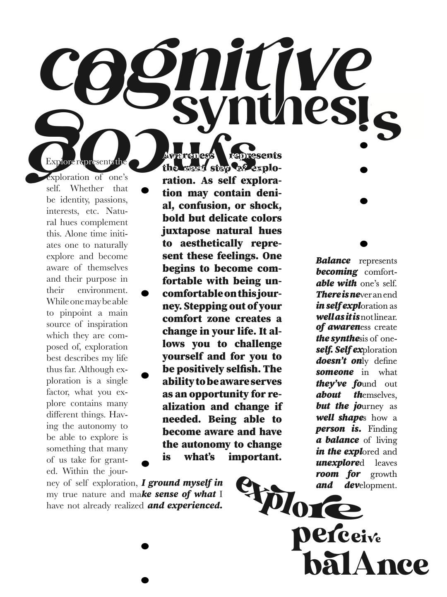 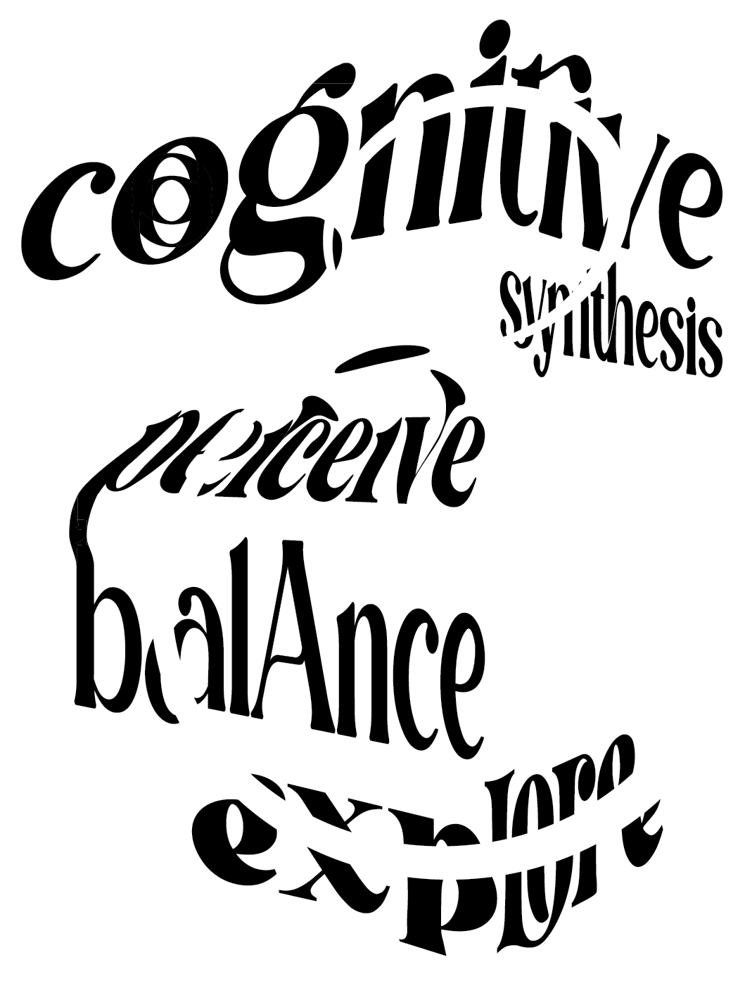Connotation elevated these posters with emotion and visual intent.
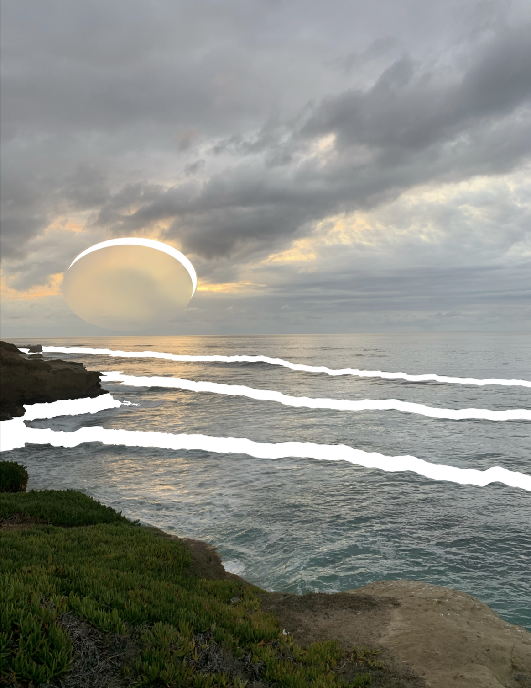 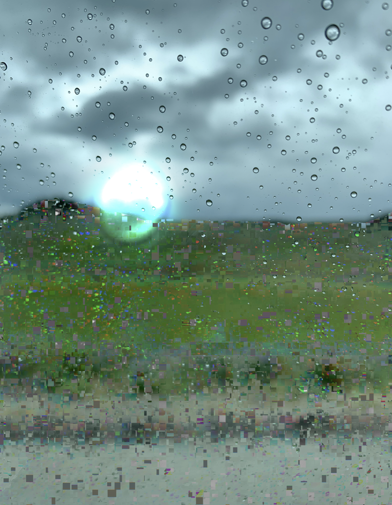 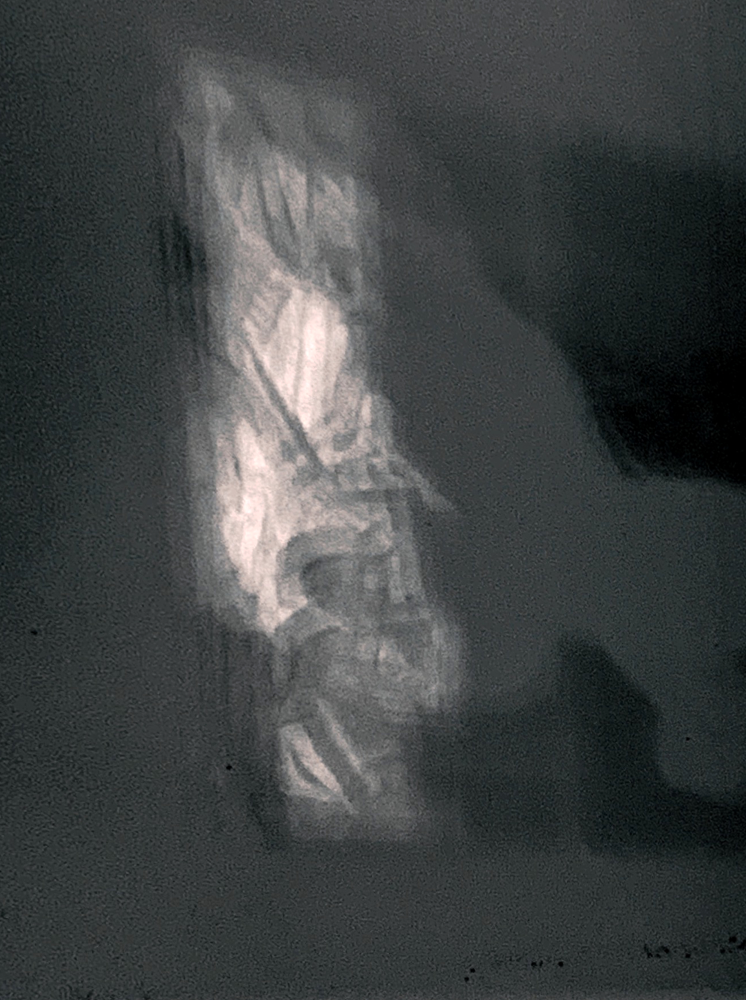 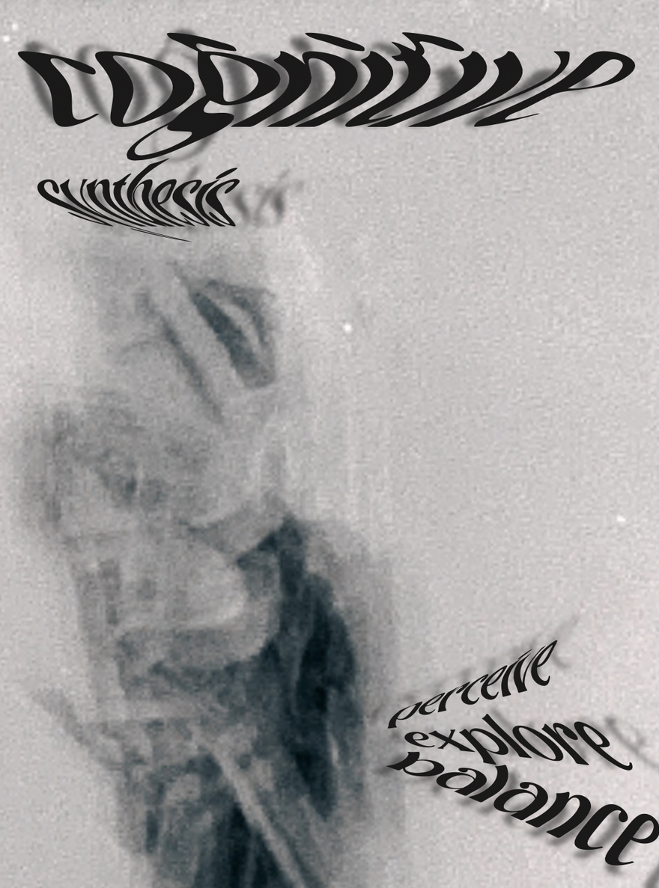 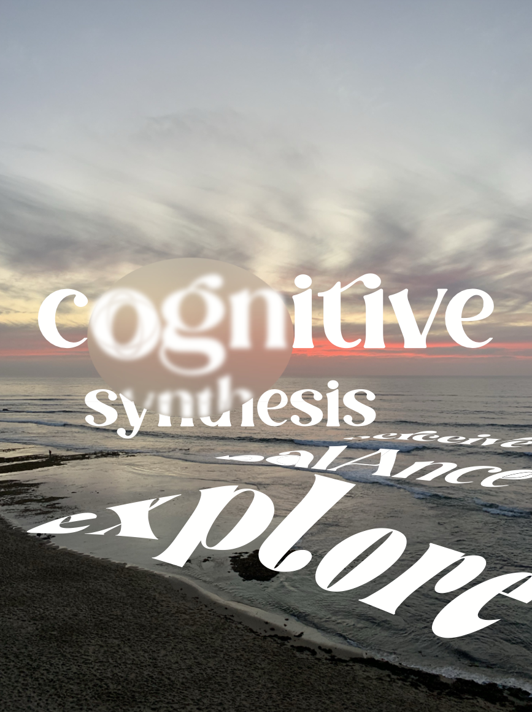 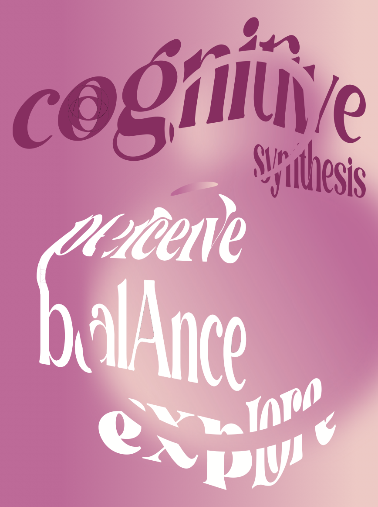 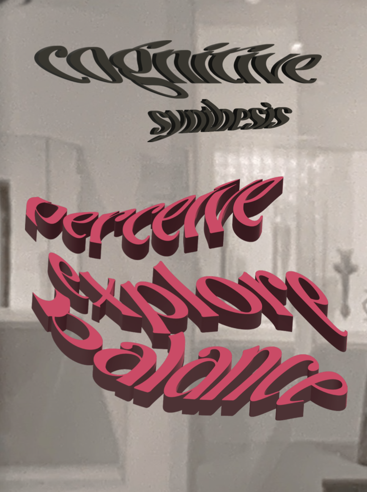 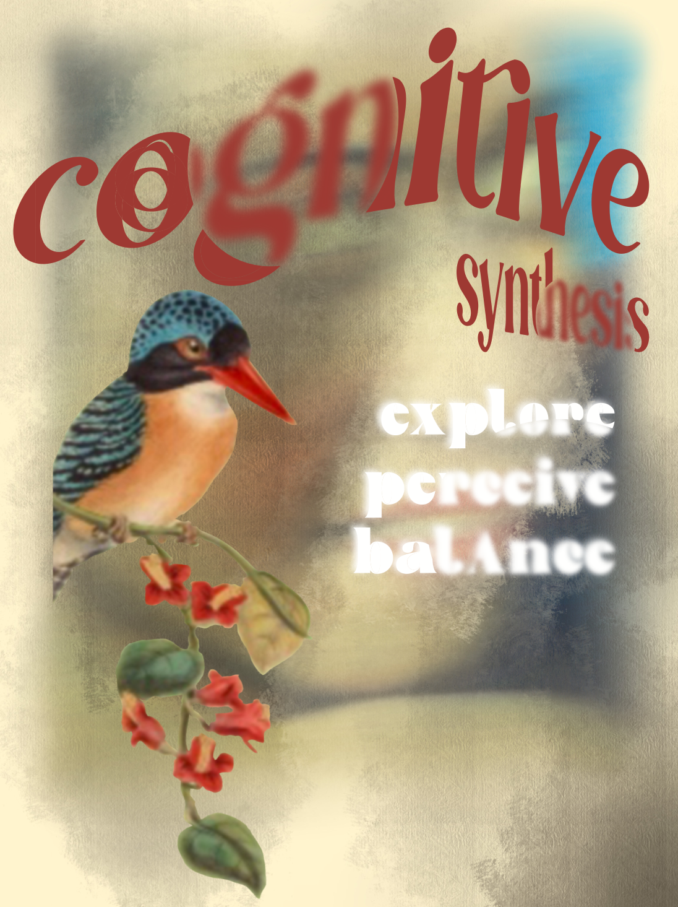 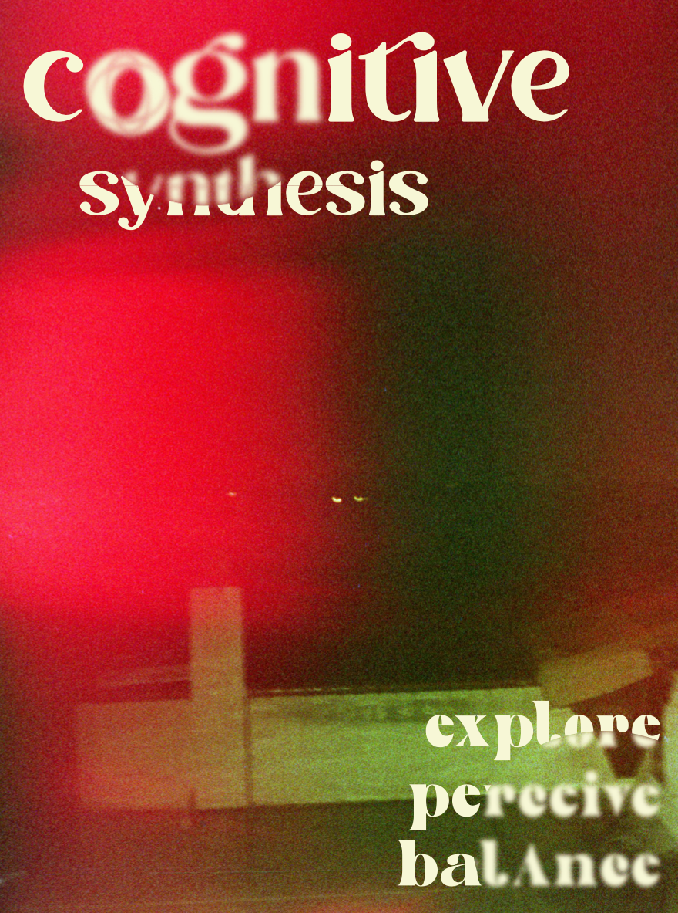Image making as the final process creates harmony with typography.
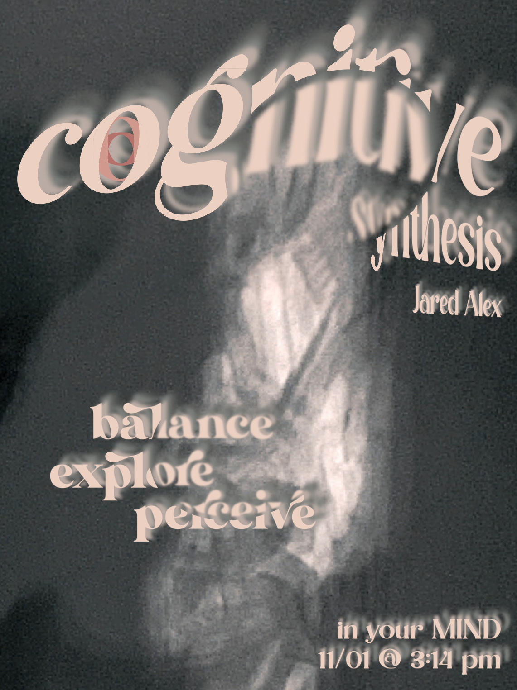The final poster ties in personal meanings and anecdotes.
procreate | photoshop | illustrator | indesign